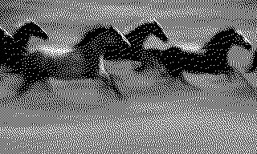

../ The Perfect Picture
"Like the river that meets the valley's stones — keep flowing." — Sayeh
Cold grass hills. With Mongolian horses running through them. Cool wind making her hair wave. Then the swallows fly. All of a sudden.

This is how I would describe our friendship. A valuable, lovable, deep friendship. I counted the days until I could return to my hometown just to see her multiple times.
We aren't friends anymore. It ended. Some things break. The reasons don't matter now. It is a heavy fact that keeps happening.
This story goes back to the final months of us. Which didn't feel final at the time. At least for me. Do you feel it if it is the last days with a friend?
It was the last months of us that she decided to follow her dreams, starting her own handmade jewelry business. She rented a small workshop and asked me to design a logo and some packaging for her. I said yes. Of course. I wanted to help.
I know how to make things look premium and expensive. That is my job. So I gave her a nice logo, sophisticated packaging, and some Instagram posts and stories to kick off the page with. I also helped her to write a bio that commanded respect. I was carefully arranging and putting everything together because that is the person I thought she was.
Not long after, the silence came. The sweet friendship died.
Months passed. I didn't call. I didn't ask. But curiosity is a curse. One day, I looked at her page on Instagram.
My work was gone.
It was replaced with a visual disaster. The logo I made was deleted. The new one was a mess. Unreadable. Amateur. Bad. Even the bio was erased, replaced by a line about "making jewelry for low pay" and a string of shiny emojis.
It looked cheap. It looked broken.
Honestly, at first, I felt upset. I felt insulted. How could she do this? Doesn't she know this is not good?
Then, the anger ceased. A cold quiet took over. I looked at the chaotic, messy page again, and the question hit me.
What if I was the one who was wrong? What if that mess, the very thing I rejected as a mess, was the real her? Maybe she was not doing anything wrong; she was just being herself.
All these years, I thought I was friends with the person. But maybe I was only friends with the image I had created in my mind. Maybe I had spent eight years polishing a version of her that only existed in my head.
We paint pictures of people in our minds, I guess. We love the painting, not the person. We get stuck with the painting, in fact. The loss felt heavy, mixed with a good amount of shock. It was the moment when the canvas — the one with the cold grass hills and running horses — blurred out and was torn up. Torn up, in fact, by the person we painted. And when the paint finally peels off, the truth laughs at you from behind it.
Maybe she didn't change at all. Maybe I just finally opened my eyes.
After some time, when I checked again, my logo was back in its place. The visual chaos was gone, but the lesson remained. It felt heavy on my chest, yet it was also a strange relief. Since then, I question everything I do for people: Am I building them up because that is their truth, or because that is what I want to see? Am I tiring myself again for nothing? That's the twist.